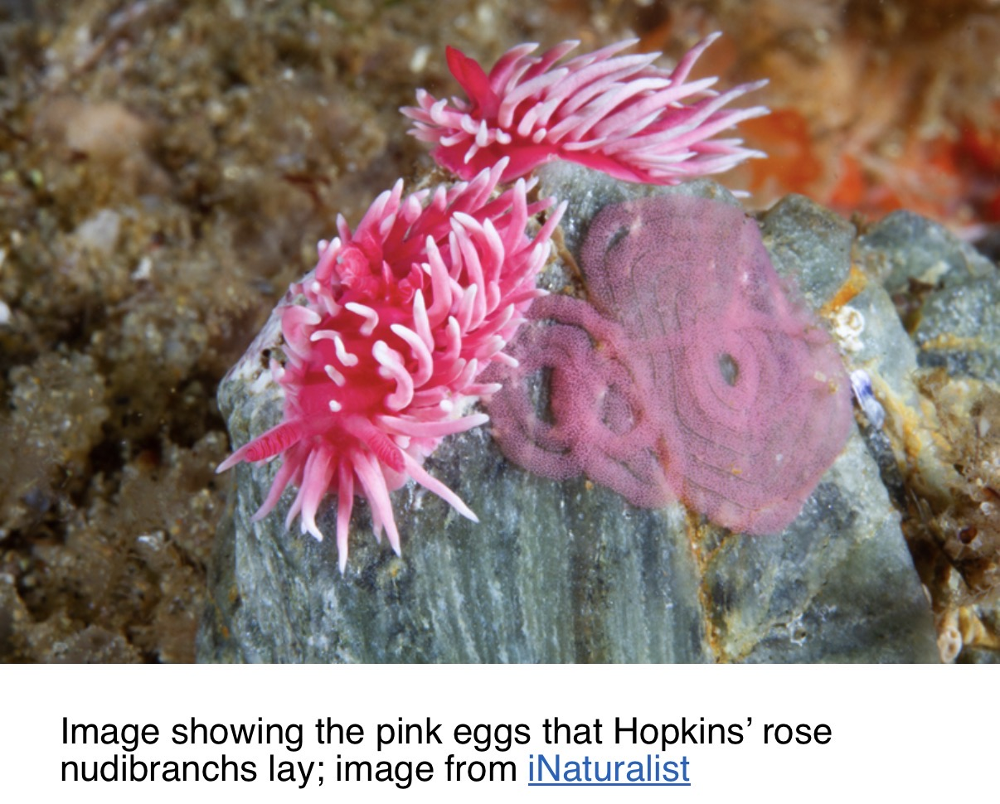
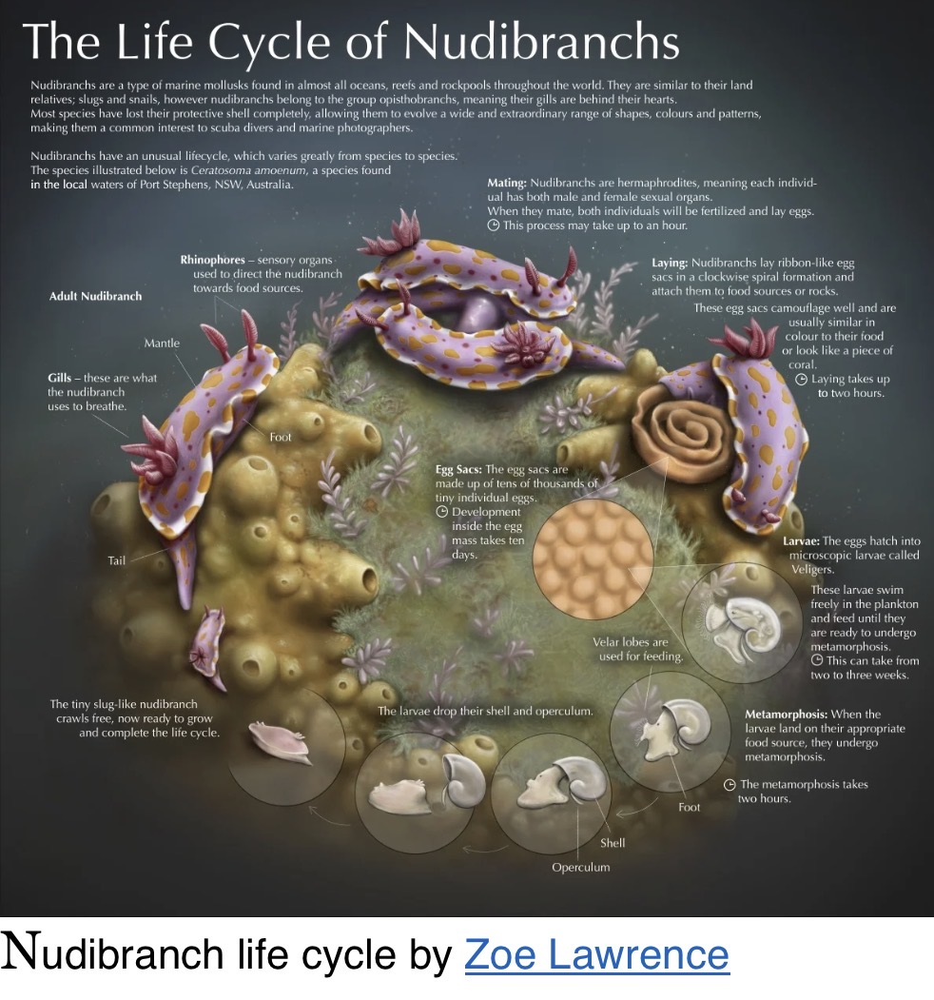
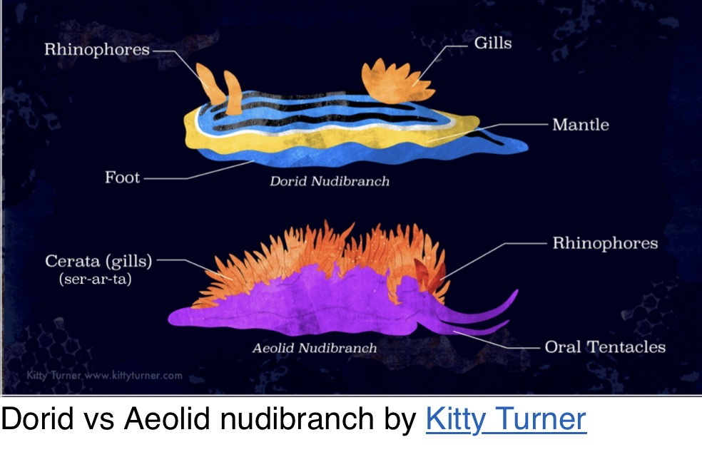
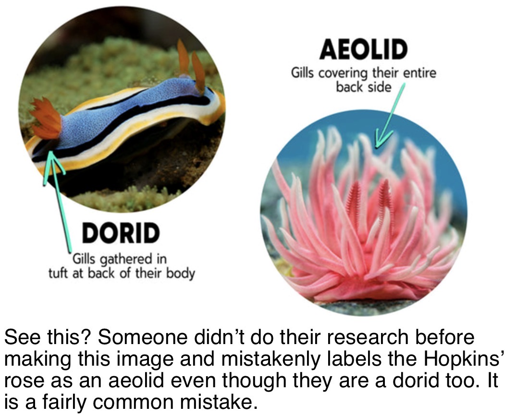
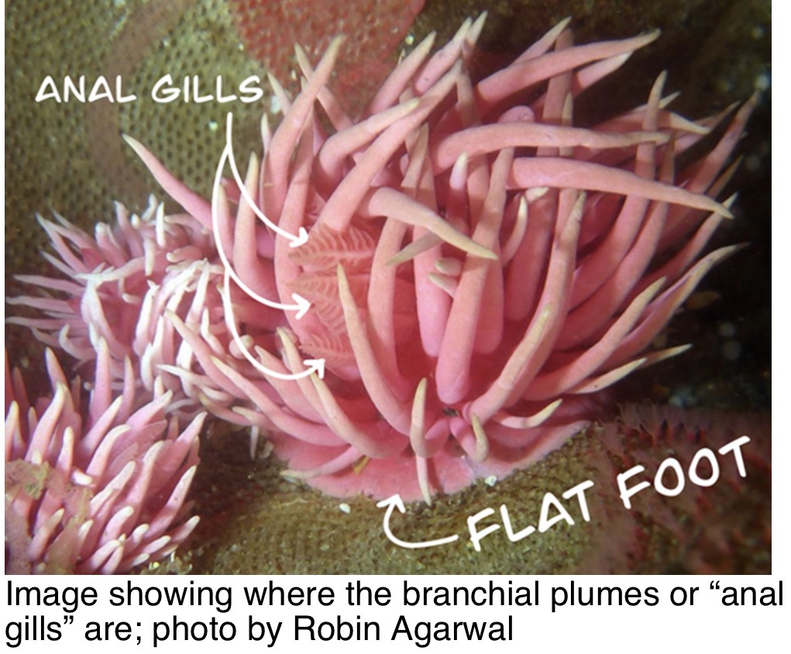
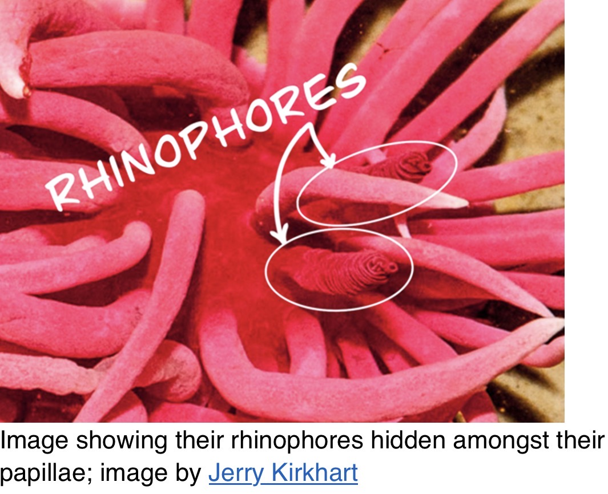
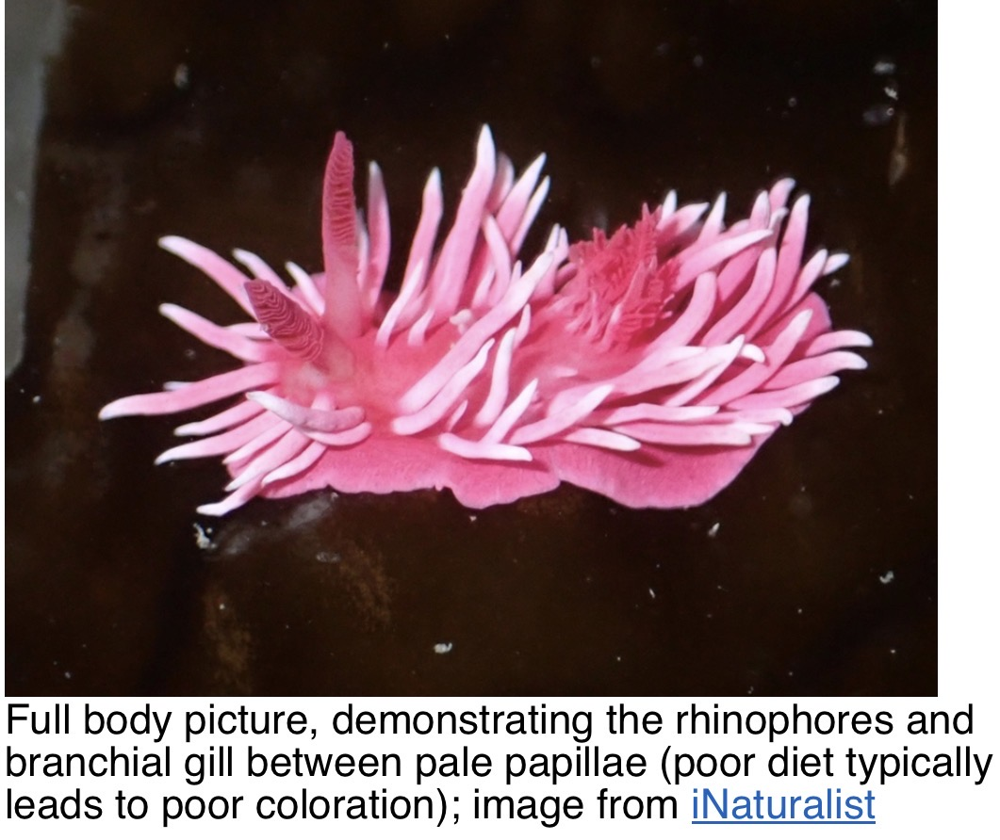

Quick guide
Hopkins’ rose is a vividly pink dorid nudibranch, often seen on rocky shores of the California coast. Its northward appearances during unusually warm ocean periods make it a useful species for discussing changing marine conditions.
Size: 2–3 cm • Food: red bryozoans • Habitat: rocky intertidal • Scientific name: Ceratodoris rosacea.
Life cycle and pink eggs
Pink egg ribbons hatch into swimming veliger larvae, which settle and metamorphose into shell-less juveniles. Adults are hermaphrodites.


Dorid versus aeolid
Although its papillae resemble aeolid cerata, Hopkins’ rose is a dorid with branchial gills near its anus. The gills can be hidden among papillae.



Rhinophores and camouflage
Rhinophores are sensory structures that detect chemical cues. They can be difficult to spot among the long papillae.


Pink coloration and diet
Prey-derived pigments, including hopkinsiaxanthin, contribute to the vivid pink color. Bright coloration can serve as a warning to predators. Color intensity alone does not establish health.
Warm-water range shifts
Warm-water episodes, including the 2015–16 El Niño and marine heatwave, coincided with unusual sightings far north of the species’ usual Southern California range.